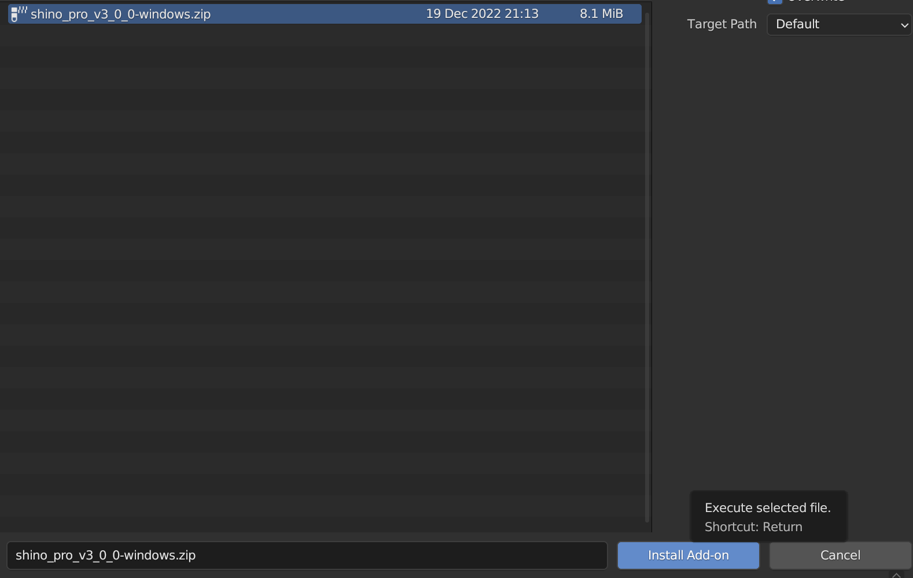
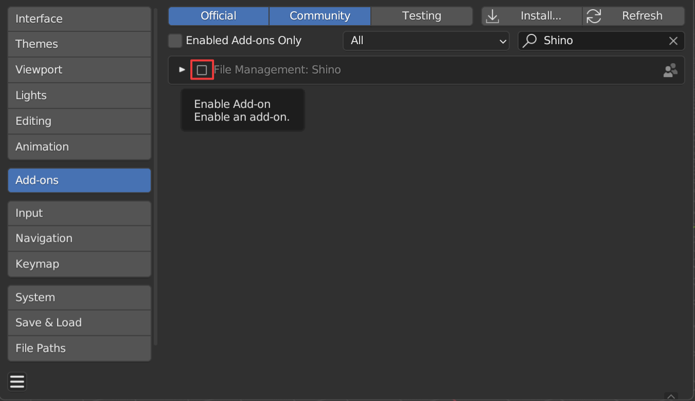
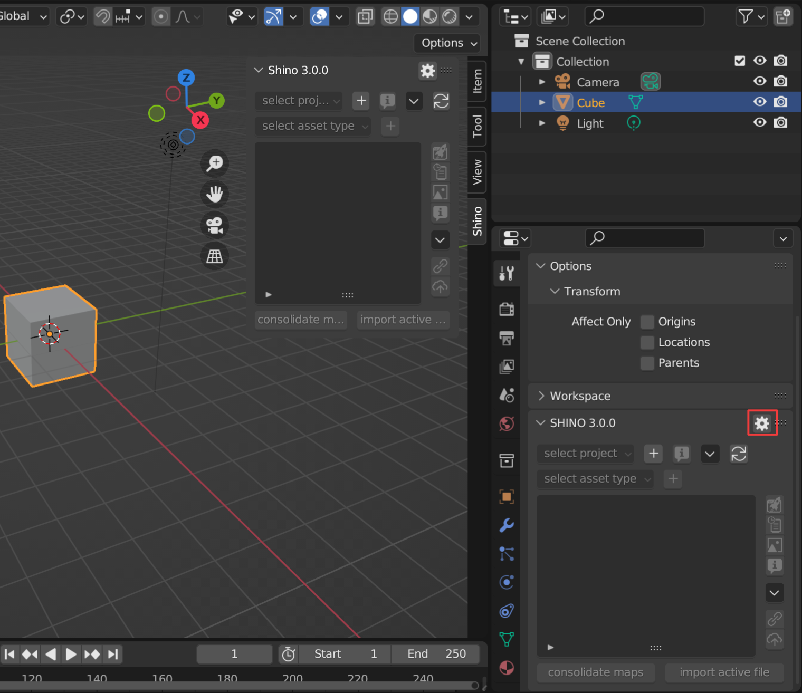

Installation
Requirement
The official version on the website is always supported first and foremost but the developments also cover Buildbot.
Addon / Hard Ops Installation
If updating Blender one must also update the Hard Ops / Boxcutter packages for the latest version.
1. Firstly ensure Blender 2.8 is up to date.
2. Ensure the latest zips are downloaded
Latest can be downloaded from the marketplace of origin. (top file is always the latest) - Blendermarket
Important
Do not unzip the downloaded files. Then install the addons (.zip files) as explained below
3. Install from file / Enable addon
If updating make sure to remove the previous version first.

Choose the zip that was downloaded and choose to install from file. After the installation is complete it will show up in the addon list.
This only works if the folder is not there already! Otherwise… issues.
In the addon panel locate Shini and Remove it, then you are able to install the newer update.
Make sure the previous addons / folders are not there and it should work fine.
First Run
Locate Shino panel in Sidebar also called N Panel (You can also find Shino panel in the Active Tools and WorkSpace Setting). Click on the tab Shino to reveal it. Enable addon by ticking the uppermost checkbox.

Preferences
To easily access Shino preferences you can use the settings button on the right of the panel
